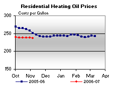
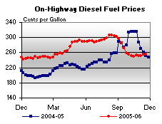
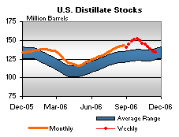

Released on November 22, 2006
(Next Release on November 29, 2006)
Days of Supply Data Now Included in Tables
Beginning with this week's issue, EIA is now including inventory data in terms of days of supply for crude oil (http://tonto.eia.doe.gov/oog/info/twip/twip_crude.html#stocks), total gasoline (http://tonto.eia.doe.gov/oog/info/twip/twip_gasoline.html#stocks), total distillate fuel (http://tonto.eia.doe.gov/oog/info/twip/twip_distillate.html#stocks), and propane (http://tonto.eia.doe.gov/oog/info/twip/twip_propane.html#stocks). Days of supply is another way in which analysts measure the adequacy of inventories, and it is hoped that users will find the inclusion of this data helpful in evaluating oil markets.
While oil inventories are often measured by looking at absolute levels, another way is to look at them on a days of supply basis, which accounts for current usage, or demand. Simply put, days of supply is calculated by taking current inventory levels and dividing by the product supplied (used as an estimate of demand) averaged over the most recent four-week period. For example, to calculate days of supply for total gasoline, we take total gasoline inventories as of November 17 and divide by average gasoline product supplied for the four-week period ending November 17. For crude oil, refinery inputs of crude oil are used as a proxy for demand. Because inventories represent the amount of immediately available local supply, a measure that accounts for usage may reflect the adequacy of stocks to provide a buffer against unexpected events better than an absolute measure, especially in markets where oil demand has recently increased.
In analyzing the adequacy of inventories, it is helpful to look at both absolute levels and days-of-supply data. Looking at the most recent data for days of supply and comparing them to stock levels provides some interesting insights. While crude oil stocks (excluding those in the Strategic Petroleum Reserve) are currently much higher than they were a year ago, on a days supply basis, they are just slightly higher (22.6 days versus 22.3 days), as refinery inputs have been significantly higher over the most recent four-week period than they were a year ago, when the effects of hurricanes Katrina and Rita were still impacting refinery operations. For gasoline, the days of supply measurement is similar to the stock level comparison, as inventories and demand are both slightly higher than year-ago levels when using weekly data. However, the apparent adequacy of distillate fuel inventories is different when looking at absolute levels and days of supply. On an absolute basis, distillate fuel inventories are significantly above year-ago levels. However, because distillate fuel product supplied has been very high lately (see last week’s This Week in Petroleum for a more detailed discussion of distillate fuel demand), in terms of days of supply, distillate fuel inventories are slightly lower than compared to a year ago (30.1 days as of November 17, 2006 compared to 30.5 days as of November 18, 2005). In terms of propane inventories, the reverse is true, as higher inventories and lower demand this year cause the days of supply comparison to show a greater abundance of propane stocks this year compared to last year (55.9 days versus 53.5 days).
In order to provide the fullest perspective on crude oil and product inventories, EIA is planning to augment the new days-of-supply tables provide above with an historical time series of days of supply. Our goal is to place this information on our website sometime early next year.
Residential Heating Fuel Prices Remain Relatively Stable
Residential heating oil prices decreased for the period ending November 20, 2006. The average residential heating oil price fell by only 0.6 cent last week to reach 237.4 cents per gallon, a decrease of 5.7 cents from this time last year. Wholesale heating oil prices decreased by 3.2 cents to reach 172.1 cents per gallon, a decrease of 1.0 cent compared to the same period last year.
The average residential propane price decreased marginally by 0.3 cent, to reach 194.3 cents per gallon as of November 20, 2006. This was an increase of 0.3 cent compared to the 194.0 cents per gallon average for this same time last year. Wholesale propane prices decreased by 1.5 cents per gallon, from 104.1 to 102.6 cents per gallon. This was a decrease of 3.6 cents from the November 21, 2005 price of 106.2 cents per gallon.
Retail Gasoline and Diesel Prices Rise Again
The U.S. average retail price for regular gasoline rose 0.7 cent to 223.9 cents per gallon as of November 20, 3.8 cents per gallon higher than at this time last year. East Coast prices rose 1.0 cent to 220.8 cents per gallon. In the Midwest, prices fell 0.9 cent to 220.9 cents per gallon. Gulf Coast prices were up 0.5 cent to 211.4 cents per gallon. Rocky Mountain prices fell 1.3 cents to 224.1 cents per gallon. The West Coast saw the largest regional increase, with prices rising 3.5 cents to 247.3 cents per gallon.
Retail diesel fuel prices were also up again this week, with average nationwide prices increasing 0.1 cent to 255.3 cents per gallon. Prices are now 4.0 cents more than at this time last year. Regionally, East Coast prices were down 0.9 cent to 252.1 cents per gallon and Midwest prices fell 0.8 cent, to 255.4 cents per gallon. The Gulf Coast saw the average price slip 0.1 cent to 246.9 cents per gallon. The Rocky Mountains and the West Coast were the only regions where prices increased. Prices in the Rocky Mountains rose 2.4 cents to 264.7 cents per gallon while West Coast prices rose 5.1 cents to 272.4 cents per gallon. Prices on the West Coast are now 7.2 cents per gallon more than at this time last year.
Propane Inventories Continue Lower
The weekly draw on U.S. propane inventories continued lower last week with a modest 0.5-million-barrel decline that pushed inventories down to an estimated 70.9 million barrels as of November 17, 2006. East Coast inventories reported a weekly loss of 0.2 million barrels, while inventories in the Midwest and Gulf Coast regions reported weekly declines of 0.1 million barrels and 0.2 million barrels, respectively. During this same period, inventories in the combined Rocky Mountain/West Coast regions remained relatively unchanged. Propylene non-fuel use inventories moved down by 0.2 million barrels last week and accounted for a 5.1 percent share of total propane/propylene inventories, compared with the prior week’s 5.4 percent share.
Text from the previous editions of “This Week In Petroleum” is now accessible through a link at the top right-hand corner of this page.
| Retail Prices (Cents Per Gallon) | |||||||
|  | |||||||
|  | |||||||
| Retail Data | Changes From | Retail Data | Changes From | ||||
| 11/20/06 | Week | Year | 11/20/06 | Week | Year | ||
| Gasoline | 223.9 | Heating Oil | 237.4 | ||||
| Diesel Fuel | 255.3 | Propane | 194.3 | ||||
| Spot Prices (Cents Per Gallon) | |||||||||||||||||||||||||||||||||||||||
 |
|||||||||||||||||||||||||||||||||||||||
|
 |
||||||||||||||||||||||||||||||||||||||
| Stocks (Million Barrels) | |||||||
|  | |||||||
| Stocks Data | Changes From | Stocks Data | Changes From | ||||
| 11/17/06 | Week | Year | 11/17/06 | Week | Year | ||
| Crude Oil | 341.1 | Distillate | 133.8 | ||||
| Gasoline | 201.7 | Propane | 70.896 | ||||